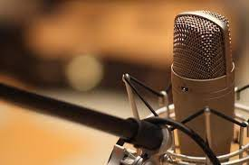
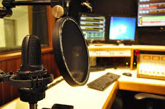
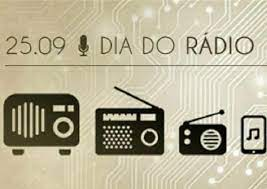

Você sabe qual a razão de 25 de setembro ser comemorado o Dia Nacional do Rádio? É porque nesse dia, em 1884, nasceu Edgar Roquette-Pinto, no Rio de Janeiro. Ele é considerado o pai não só do rádio brasileiro, como de nossa radiodifusão.
O pioneiro colaborou ativamente na primeira transmissão oficial do rádio brasileiro, em comemoração ao centenário da Independência do Brasil, em 7 de setembro de 1922. Ao lado de Henrique Morize auxiliou na instalação de uma estação de rádio no Corcovado, Rio de Janeiro, para veiculação de músicas (como a ópera “O Guarani”, de Carlos Gomes) e o discurso do então presidente Epitácio Pessoa. Um ano depois, 1923, Roquette-Pinto criou a pioneira Rádio Sociedade do Rio de Janeiro, considerada também a primeira emissora educativa. Dizia ele sobre a importância do rádio:
Informação, entretenimento e principalmente educação e cultura. Esses eram os principais objetivos do radiodifusor. Pelo rádio promovia ensino de línguas, programação infantil, aula de ginástica e demais matérias básicas, entre outras atrações, com o mesmo fim educativo. Era um complemento à educação, sempre levando pelo rádio o conhecimento de forma didática. Roquette-Pinto foi também professor, médico legista, escritor, professor, eugenista, etnólogo, antropólogo, ensaísta, além de membro da Academia Brasileira de Letras. Em 1936, ele doa a Rádio Sociedade do Rio de janeiro ao então Ministério da Saúde e Educação, futuro MEC, instituindo que para continuidade da emissora deveriam ser mantidos os propósitos totalmente educacionais e culturais. Daí nasce a Rádio MEC AM, sendo que hoje também existe a Rádio MEC FM.
Nos anos 1940, Roquette-Pinto realiza cerca de 300 filmes em curta-metragem para o Institucional Nacional de Cinema Educativo, além de realizar experiências em televisão (como contamos no volume 1 do livro “TV Tupi: Do Tamanho do Brasil”, de Mauricio Viel e Elmo Francfort). Roquette-Pinto faleceu em 18 de outubro de 1954. De 1972 a 2007, a TVE (TV Educativa, canal 2 carioca), ligada ao Governo Federal, foi gerida pela Fundação Roquette-Pinto (futura ACERP – Associação de Comunicação Educativa Roquette-Pinto), que reúne também às rádios Nacional, MEC AM e FM. Em 2007 as emissoras passam a integrar a EBC – Empresa Brasil de Comunicação, que transforma a TVE em TV Brasil. Hoje o rádio se transforma cada vez mais, com o incentivo da ABERT também ao uso do chip FM nos celulares. O sonho de Edgar Roquette-Pinto e de tantos radiodifusores pioneiros hoje é realidade nas milhares de emissoras que existem em todo Brasil. Em 2017, a ABERT criou o MobiABERT, maior integrador de rádios do país.
  